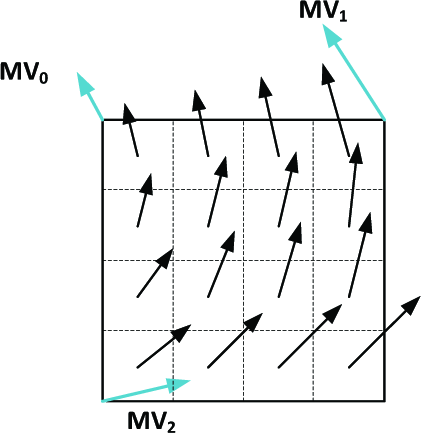

3.4.3 光流仿射修正（PROF [Affine Prediction Refinement With Optical Flow]）
BDOF 技术的引入，让音视频编解码工程能够进一步提高传输过程的数据压缩比。但由于仍然依托于分块和分块内小块（也是前文的梯度卷积核），当出现块的偏移、扭转、错切等情况时，像素位置的微小变动则会被此类变化成倍的放大误差。所以，还需要 适当的修正 。
我们知道，音视频编解码规格（如 H.264、H.265、H.266）中，分块的子块也是存在类似的情况的。我们为了处理问题，采用的是 基于控制点运动矢量（CMVP [Control Point Motion Vector]）的子块仿射运动补偿（AMC [Affine Motion Compensation]） ，并在 H.266 中根据目标子块大小衍生出了 高级运动矢量预测（AMVP [Advanced Motion Vector Prediction]）的仿射模式 ，和 混合预测（Merge）的仿射模式 。通俗理解，即通过相邻帧的相同块内子块的仿射变换，来映射原子块区域的对应关系。
但子块控制点的运动是远大于像素运动的，那么同样的情况发生在更小的尺度上，是否还能达到效果呢？
答案是可以的。
在 LK 条件下局部光流趋同性，决定了像素光流的差分补偿对分块只需要单次计算即可。那么对于子块来说，只用在原有仿射运动补偿（AMC）的基础上，对块内像素额外附加 光流补偿值（OFC [Optical Flow Compensation]） 即可。
记分块 m 有，中心点 Kxy 在全图的绝对像素位置 Kxy=(Kx, Ky) 的子块 k 。存在子块内相对位置为 pij=(i, j) 的像素点 pij 。由于子块内是不存在时差的，即时间残差 ∇tI=0 存在，则记 pij 的子块内光流补偿值（OFC）是 ΔIp ，根据基础光流公式就有：
ΔIp=∇pI⋅Δv⃗p + ∇tI=∇pI⋅Δv⃗p
其中， Δv⃗p=(ΔVi, ΔVj) 即是点 pij 在子块 k 内的光流偏移，这个值相对子块内部中心 Kij ,在分块 m 内子块无相对变化情况时，是个恒定值，有：
ΔKp=pij−Kij=(Δi, Δj)=Δij
而根据仿射变换特点，当分块 m 发生仿射变换，其每个子块 k 的像素点内部光流偏移矢量，也会发生 等效于块中心运动补偿 的仿射变换。
因此，假设分块 m 块运动采用左上、右上、左下的三点定位（即标准三控制点），记帧 R0 到帧 R1 有块三点定位运动矢量分别为 MV⃗0 、 MV⃗1 、 MV⃗2 如下：

图 3.4.3-1 PROF 子块光流与块运动矢量示意图[30]
假设分块 m 大小为 Mw×Mh ，则有块从帧 R0 到帧 R1 的位姿仿射变换矩阵 A 使得：
Δv⃗p=A⋅ΔKp=A⋅Δij=⎣⎢⎡MwMV1,x−MV0,xMwMV1,y−MV0,y,MhMV2,x−MV0,x,MhMV2,y−MV0,y⎦⎥⎤⋅[ΔiΔj]
而 ∇pI 可由子块 LK 计算等效获取，有：
Ip(i, j)∇pI(i, j)=Ip(x+Δi, y+Δj)=(∇iIp, ∇jIp)=⎩⎪⎨⎪⎧∇iIp = 2Ip(i+1) − Ip(i−1)∇jIp = 2Ip(j+1) − Ip(j−1)
所以，子块内像素的最终亮度 I^p 取值为：
I^p=Ip(x, y) + ΔIp(i, j)=∇pI(i, j)⋅Δv⃗p≈Ip(x, y) + ∇iIp⋅ΔVi + ∇jIp⋅ΔVj
上式中的 Ip 即像素点 pij=Kxy+Δij=(x+Δi, y+Δj) 的分块 m 内实际亮度预测值，可通过 BDOF 求得，也可以采用其他传统块推理方式获取。根据 PROF 的修正，BDOF 推算所得像素点的亮度将更为准确，进而在 提高压缩程度（以子块为最小压缩单位的块内冗余压缩）的同时，保证了灰度（亮度值）数据还原效果 。
以上我们介绍的，就是光流法在音视频编解码过程中较为粗浅的基本应用了。这些数学工具已经通过标准化，被嵌入到了 H.266/VVC 规格中，并在同期其他竞争规格（如 AV1）的最新标准里逐步推广。而光流法的引入，无疑进一步缩减了传统音视频和机器学习之间的工程鸿沟。在可预见的未来，人工智能模型流水线和编解码器必然会有更深入的融合，在技术层面形成一套全新的顶层设计。这种趋势，作为音视频开发者，是不应该忽视的。
回到当前话题，在依靠光流法处理了传输格式的亮度狭时空域冗余数据后，如果能够在纯空域上，同时对随亮度传输的色度信息进行一定程度的压缩，就能更好的降低数据成本，并提升色彩还原程度，支撑更广的色域选择了。
这就是色度缩放亮度映射技术的由来。